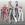

|

Lord Strife
Author of 5 Stories |
Sun and Space: Lord Strife
'xxx' – Thoughts {xxx} – Panda Signs
Version 1.1 Chapter 5
Juuban Museum
"DEEP SUBMERGE!"
A magical ball of water shot out towards the youma. The youma merely placed its arms in front of what passed for its' face as it braced itself for impact. True enough, the attacked hit head on but the youma didn't even budge from where it stood.
"Crap! That thing wouldn't budge short of a nuclear bomb!" Sailor Uranus spat. She and Sailor Neptune had been fighting the youma for nearly fifteen minutes now, but the youma showed no signs of slowing down.
The youma sensing an opening, leapt to the attack. It lunge its razor sharp claws towards where Uranus was standing. Uranus brought out her Space Sword in hopes of deflecting the blow. She was caught unaware of the force the youma brought to bear and was thrown towards the wall.
"Uranus!" Neptune shouted as she leapt towards her fallen companion.
"BURNING MANDALA!"
The youma was caught off-guard as the magical attack struck home, sending the youma careening in a different direction.
"Mars! Where are the others?" asked Neptune as she helped Uranus to her feet.
"They'll be here shortly..."
The youma having recovered from the blow stood from where it fell and began to access its new opponent.
"What the? My attack didn't even scratch it!" Mars gaped as she looked at the youma.
Uranus and Neptune joined Mars from where she stood.
"Do you like my new pet senshi?" a voice came from behind the youma.
The scouts turned to the figure that materialized behind the youma. "My, my...by the looks on your faces I can tell you don't even recognize me...I'm hurt!" (She makes an over exaggerated face of disappointment...think of Kodachi's face...ugh).
"Feh! Who would want to remember a face that ugly?" Mars retorted.
Cephei's face turned to a scowl. "Shut-up brat! You wouldn't know true beauty if it struck you in the face." She chuckled lightly at her own praising.
"Ack! If that's beauty, I don't wanna know what ugly is!" Mars replied with a face of disgust. Neptune and Uranus nodded their heads in agreement.
"HOW DARE YOU INSULT ME? ME? THE GREATEST AND MOST BEAUTIFUL SCIENTIST IN THE UNIVERSE! OHOHOHOHO!"
"Man she gives me the willies!" Neptune said as Uranus and Mars could only agree.
"I think she's a psycho." Uranus added.
Cephei turned to face the scouts with a face of filled with fury. "Enough! You obnoxious little insects will die by my greatest creation yet! Go my pet! Bring their heads to me!"
Immediately the youma leapt into battle again, extending its claws as it attempted to reach the senshi as they jumped back.
"BURNING MANDALA!"
"WORLD SHAKING!"
The youma jumped out of the way of the magical attacks.
"I haven't seen a youma dodge that good before!" Mars said as she looked at the youma with additional caution.
"I know...we've been fighting the darn thing for over fifteen minutes now." Uranus said as she readied for another attack.
The youma leapt again, its' arms morphed into something shaped like a broad sword as it attempted to cut through the Sailor Scouts' hides.
"SILENCE GLAIVE SURPRISE!"
The youma didn't even see the new arrival as Saturn's attacked created a crack in the youma's omicron armoring, as she sent it tumbling towards where Cephei stood.
Cephei jumped out of the way just as the youma crashed beneath her.
'These brats are giving my youma a hard time. 'Hmm...teamwork, eh? Cephei's face gave a wicked smile. 'Yes, if my youma where to have a coordinated assault...statistics on victory would greatly increase...and add to it several projectile and melee attacks...'
She then noticed a portal opening from behind the scouts and from there emerged the remaining senshi, including Sailor Pluto.
"My! If it ain't the old smarty pants Cephei!" Vesta said as he stepped out of the portal.
Cephei glanced once at where her youma has fallen. 'Tsk. I can't escape with the youma intact...oh well...sacrifices have to be made.' She regarded the assembled senshi. 'So my archrival Mercury is here, humph I'll have to deal with her later.' "You win this round Senshi. But I will be back. This has just been...a field test...next time you won't get lucky again."
Cephei dissolved into the shadows, just as her youma began to stand up.
"I can't believe she left her youma! Oh well, might as well deal with it, before it destroys anything else!" Uranus said as she leapt to attack the youma. "WORLD SHAKING!"
The other senshi followed suit. And after a considerable five minute battle and exploiting the crack on its' armor courtesy of Saturn, the youma was reduced to ash.
Sailor Pluto walked in front of everyone, "Everyone...I have something to tell you...meet me at Haruka's apartment later." She then eyed Vesta and Sun. "And you two better be there as well. This news I'm about to tell you may pose a danger that is bigger than that of Metallia!"
Elsewhere
"The day of reckoning draws near." A figure said to his companion.
"Yes. Fate and Destiny has intertwined...nothing can alter its' course."
"Will the gods interfere?"
"Directly? No. Through other mediums? More likely, they have already chosen their champions."
"Is that why you seized the Time Gates?"
His companion replied only by nodding.
"You know that's bound to agitate the Norns." He turned to his attention to a magic window showing the image of the Time Gates. Though the Gates where in their possession, they don't have the means of controlling it. Apparently the Norns have built in several fail-safe devices that allow only the Guardian of Time and the Norns themselves to access its powers.
"Yes, it would...wouldn't it? Though we could not use it to our advantage, we have also removed their chosen's advantage."
Behind the two figures, one could see an army amassing.
Outside Furinkan High, Nerima Ward
"Oh what tragedy has befallen my goddesses? That the foul fiend Saotome has dragged them against their wills away from the loving presence of their one true love!"
Nabiki couldn't help but grimaced. 'Yup the Blue Blunder of Furinkan High is in lala land again.' But it comes to question if Kuno ever left lala land in the first place.
"Tendo Nabiki! You must tell me where the fiend has taken my loves! So that I, Kuno Tatewaki, rising star of Furinkan High may sought the foul sorcerer and free my goddesses!" Kuno bellowed out as he strikes a heroic post.
Nabiki was tempted to sell that info so many times, but out of respect to Nodoka, she couldn't bring herself too, especially when Nodoka had an incentive of doing so. "Sorry Kuno-baby. If I knew where they are I would have already told you."
"Alas...my only hope is that my loves would have the strength to face the fiend alone! Without my loving presence they may not resist the evil of the sorcerer for long..."
Nabiki decided she had enough of the Kuno rambling les she starts talking like the idiot. She headed inside Furinkan to meet up with her people. She after all, has bigger fish to fry, namely a certain 'Arthel' and 'Lithea' that has a 500,000 yen price tag on it. 'Maybe this weekend I'll pay a visit to Akane and Ranma. Who knows? It might turn out that these two people are really Ranma and Akane.' She chuckled at that thought. 'Yeah right, as if those two would be lovey-dovey all over each other.'
"Hey, Nabiki!" called out a certain okonomiyaki chef.
"What is it, Ukyou?" replied the mercenary girl.
"So, I take Kuno is rambling about Ran-chan taking away his two loves again?"
"Yeah, you can say that. I guess when the kami gave the gift of knowledge to the world, that baka might have been asleep." (A.N.: This is just a usual saying from where I am from, God spreading out his blessings)
"So any news where my Ran-chan is?"
Nabiki surely didn't miss the implied 'my' in the question.
Before Nabiki could reply, Ukyou cut her off. "I know you know Nabiki. Don't deny it. I'm not a stupid moron like that delusional kendoist who couldn't for the life of him tell when a person doesn't like him."
Nabiki just shrugged, "What if I do?"
"I'm prepared to pay any amount. I can't leave Ran-chan alone with Akane. Who knows what she has tried to feed Ran-chan with her so-called cooking!"
Nabiki visibly shuddered at the mention of Akane's cooking. But nonetheless, she did promise Nodoka she wouldn't say. "Nah, you wouldn't be able to afford it. Just forget about it."
Ukyou ran in front of Nabiki and said, "You can't keep it forever a secret Nabiki. I will find out where Ran-chan is!" With that Ukyou left the school grounds, heading for her shop.
'In a way Ukyou is right.' Nabiki pondered, 'Genma does know where Ranma and Akane are, and I doubt he has reservations of selling that info just to fill his belly.' Then a smile can be seen of Nabiki's face, 'Unless he wants to meet the business-end of Auntie Saotome's blade.' With that last thought she entered the building.
Not far from sight, Shampoo lay hidden within the trees. 'Hibachan says if Shampoo keep eye on Mercenary Girl, she lead to Airen. Shampoo need be patient. Airen must be sick by now, eating Violent Tomboy's cooking.' Shampoo smiled at that thought, 'Maybe Airen now think that Kitchen Destroyer food too, too bad and come to Shampoo.'
Shampoo hopped towards the school ground trying to evade detection from the students heading home. She needs to keep a close eye on the mercenary Tendo is she intends to find her wayward husband.
As soon as she entered the grounds, one could here a familiar shout, "WHERE THE HELL AM I NOW?"
Haruka's Apartment, sometime in the afternoon
Setsuna was sitting on one of the sofas, contemplating what she is about to say to her fellow senshi regarding a new enemy that is threatening Crystal Tokyo.
Mamoru, in his Tuxedo Kamen outfit, was present due to the insistence of Usagi. Luna and Artemis were also present. All the senshi, save Vesta and Sun are already present, and are currently in their transformed state.
"When will those two arrive?" Luna asked. She has been hoping on meeting the two recently re-awakened senshi for quite some time now.
"Be patient, they'll be here." Setsuna replied. 'At least they better be.' She added to herself.
"So...what about this new enemy we're facing Pluto?" Haruka inquired.
"Wait for Sun and Vesta. I don't want to repeat myself."
Before anyone else could voice a comment, a bright portal opened in the middle of the room. The senshi immediately recognized it as one of Vesta's portals, but instead of two people emerging from the portal, only one person went through, Sailor Sun with the portal closing behind her.
Pluto raised an eyebrow, "So...where's your husband?"
"HUSBAND?" Everyone shouted at the top of their lungs.
Pluto took on that usual 'elderly-sage' look and said, "Oh, did I forget to mention they were married?"
Venus rubbed her temple, "Is this the reason why you said Sun was not keen on sharing? Is it for the fact they're already married?"
Pluto nodded, while both Jupiter and Venus groaned, and Sun smiled.
Mercury was saddened as she remembered the wedding, but did not show her sadness outside.
Sun turned to face Pluto, "He said he has other things to look into. I'll fill in for him." She moved to stand next to Mercury and to the surprise of the others, and of Mercury, hugged her.
"It's been such a long time, cousin Melira." Then Sun whispered to Mercury, "I need you to play along."
"Yes it has been, Lithea. It's so good to see you again." Mercury then whispered to Sun, "What other things is Vesta dealing with?"
"Actually he wanted to come, but seeing two moon cats he'll just go Neko. And it may be a give away to Setsuna. Who else do you know of having extreme fear of cats?" Sun whispered back.
Mercury gave a slight nod.
Pluto noticed that both Mercury and Sun were whispering to one another. 'I wonder if...Ami knows who Sun's alter-ego is.'
"Melira?" Everyone asked.
Sun released Mercury from her hug and nodded. Saturn stepped forward and hugged Sun.
"Lithea-neechan!"
"Hey Alexia, doing well I presume?"
Saturn smiled at her 'older' sister.
"Alexia?"
Pluto explained, "Melira was Mercury's name during the Silver Millennium. As is Alexia Saturn's name. I presume the two of you just recently remembered it?"
Both Mercury and Saturn nodded.
"Apparently, since seeing Sailor Sun and Sailor Vesta some bits and pieces of our memory seemed to return to us." Mercury said a matter-of-factly, 'Though some of that memory I wished never resurfaced.' sigh
Pluto waved her hand to the other senshi, "Anyone else remembers her Silver Millennium name?"
Mars raised her hand, "I do. My name was Aryienne."
Pluto nodded, "Anyone else?" Seeing no more reply she continued, "I guess the others would like to know?" Venus, Jupiter, Uranus, and Neptune nodded.
"Venus' name was Lady Arleen Josephine Maryanne Elizabeth III of House Ainheim."
Uranus whistled, "Wow nice name."
Artemis nodded, "Venusians love stylish names."
"Cool. Just like the nobility of England!" Venus happily acknowledged.
"Jupiter's name was Mei Kua-Pu."
"Huh? That sounds like make-up." Jupiter intoned, 'Just my luck I get to figure out my Silver Millennium name and it sounds like a beauty product.' "And don't laugh at it!" All but Uranus stopped her laughter.
'Hmm...now that I think about it...sounds just like those of the Joketsuzokou Amazons.' Sun pondered on this and decided to ask Vesta later.
"Uranus name was Valesti, while Neptune's name was Nibela."
'At least my name sounds okay.' Uranus and Neptune both thought.
Sailor Moon stood up from her sitting position on the couch and moved next to Sun. "Umm...Sailor Sun, since we are all part of the team. I was wondering if you could tell us your identity and us vice versa, so in case of anything happening we can easily contact one another."
The other scouts nodded their head. Setsuna noticed that three heads, except for Sun, didn't nod. 'What the...Mercury I've already deduced but Mars and Saturn too? Could they already know who Sun and Vesta are? I better ask Hotaru later.'
Sun smiled to her princess, the other senshi saw her smile and immediately recognized it as the same smile Pluto gives, the I know something you don't smile. "Now, now Usagi, you know better than to try and pry secret from others."
The other senshi (saved for Pluto, because she knew from the first day that Sun and Vesta already knew their identities, Mercury, Mars and Saturn), Tuxedo Kamen, and two moon cats gave a collective gasp.
"You...you know who we are?" A shocked Sailor Moon asked.
Sun nodded, "Mercury is Ami. Mars is Rei. Saturn is Hotaru. Uranus is Haruka. Neptune is Michiru. Jupiter is Makoto. Venus is Minako. Kamen is Mamoru. Moon is Usagi. And of course, Pluto is Setsuna. And mine is..." Sun trailed. Everyone (except again the three) leaned-in in anticipation. "...is a secret!" The others immediately face-faulted. 'Arthel was right, that was fun! You hardly see Setsuna kiss the floor!' Sun laughed to herself.
"Hey that's not fair! You know our identities but we don't know yours!" Venus cried out.
"I take it you and Arthel still need time for yourselves if you aren't planning on sharing your alter-egos yet?" Pluto asked after she righted herself on the sofa again.
Sun nodded. 'For the fact he and I aren't married yet in this lifetime but no need to tell her that.' Sun thought to herself.
Sigh "Fine, I guess you'll tell us when you're ready anyway. Now to the point, we have a bigger problem. A new enemy has appeared and...they took over the Gates of Time from me."
"WHAT?" everyone yelled at the same time.
"Then that means our enemies have access to the Time Stream then?" Mercury asked.
Setsuna shook her head. "Even if they took the Gates from me, they will not be able to use it. The Gates have several fail-safe mechanisms allowing only the Time Guardian to access it. No one else can."
"Then why bother taking it?" Jupiter asked. "If they can't use it why even bother?"
"It's quite simple actually." Sun started, "Because we too will not be able to use the Time Gates to our advantage." Everyone nodded in understanding. "So, Pluto who's our new enemy?"
"I think you might recall them Lithea. Does the name Imperium ring any bells?"
"Kuso! No way!" Sun visibly shuddered at Pluto's statement.
"Imperium? What's that?" Moon asked.
"The Imperium is an ancient Empire that is spanning countless planets across the galaxy. Their goal is obviously total dominion, but not the normal take the planet over dominion." Pluto stopped to see if the others were still following her story, seeing everyone is she continued. "Their main objective is to take the worlds that have been blessed by the gods, those worlds that have the Heart of Destiny.
"Heart of Destiny? What's that?" asked a curious Sailor Moon.
Sun answered for her, "A Heart of Destiny is an artifact given to a world that has been blessed by the gods. In our case it's know as the Silver Imperium Crystal."
The others all gasped at that.
"You mean they're after my Silver Imperium Crystal?" Sailor Moon asked disbelievingly.
Pluto nodded, "Their goal is take all the Hearts of Destiny, and alter reality according to their will. With all 108 Hearts of Destiny (AN: Yeah, yeah I took this from Suikoden though I altered it a bit, instead of Stars of Destiny I used Hearts) at their hands they can, they can reshape the future as they see fit. And not only could they reshape the future, but they can also reshape one person's destiny. They'll be in total control of a person's life. They can set you either as a prince or a pauper at their leisure."
"That's...that's horrible! Why would they wish to do that?" Moon was now at the verge of crying. "It's just not right to dictate a person's life! We all have a choice in what we do and in what we become!"
"Tell that to them." Sun snorted, "So how much time do we have before they come here?"
Pluto sighed, "We got about six months at most. They're waiting for the Celestial Alignment to occur for them to traverse to this part of the Universe.
"So we got six months. We better deal with Metallia and fast!" Jupiter stated as she cracked her knuckles.
"Yes that we must. I still have certain influence to the Gates of Time but it is very minimal. I'll need both the Mercury Computer and the Aqua Mirror to aid me in searching out Metallia's lair."
Mercury and Neptune nodded, "Consider it done." Both replied.
"I guess this concludes this meeting, I'll take my leave now and inform Arthel the situation." She pulled out a communicator from sub-space, "Hey Arthel, open up the portal will ya." The senshi heard a confirmative response and soon a portal opened and Sun stepped in. As soon as she entered the portal closed behind her.
"I wished she could have stayed longer, I have lots of questions to ask her." Luna pouted.
Artemis just nodded.
"I never knew Sun and Vesta were married...or is it I knew and forgot?" Venus was contemplating this.
"Forget it, Venus. Our memories are so Swiss-cheesed I wouldn't even remember how old I was back then."
Venus nodded then smiled, "Yeah, guess your right...Mei Kua-Pu!"
"HEY! It isn't funny!"
Pluto already stood up, she was going to call Nabiki and see if she has any update and to later ask Hotaru regarding Sun and Vesta. The other senshi we're already de-transforming and began to disperse.
Hotaru, after de-transforming, approached Ami and Rei. "Umm, do you guys remember their wedding? I mean Arthel and Lithea?"
Rei shook her head, "Not really, it's very vague to me at the moment. Maybe I'll consult the Sacred Fire later."
"I do remember some things about it...I know for one all the senshi were present..." Ami was still trying to recall most of the events that occurred way back then.
"Come on girls, Akane must be waiting for us. She and Ranma are probably waiting for us back at the shrine." Rei gestured to the others.
Nerima Ward
Kuno was meditating under the tree that was frequented by both Ranma and Akane during lunch breaks at Furinkan High. "Oh my fierce tigress Tendo Akane and my beloved pig-tailed goddess...how can I free you from the loathsome clutches of the foul sorcerer Saotome..."
"Hey Kuno-baby! What are you doing over Ranma and Akane's favorite lunch spot?" Nabiki asked as she stood next to the delusional kendoist.
"Ah, Tendo Nabiki. Yes, I am sure you're eager to know why I sit at the very place frequented by the sorcerer." Kuno waited for Nabiki to nod before he continued, "I'm meditating at this very spot so that I may discover the very foul magic binding your fierce sister and the beauteous pig-tailed girl, so that I may finally smite the foul fiend enslaving them!"
"Sure you will Kuno-baby..."
What ever Nabiki may have added to say was cut short as part of the wall of Furinkan exploded. From the dust cloud, emerge an older youma, the one used for energy collection.
"So the fiendish sorcerer has sent his foul minion to do his evil deed! The coward! Afraid that he is no match for the overwhelming skills of the Blue Thunder of Furinkan High! (Insert lightning flashes at the background) Very well, I shall smite the foul beast as it should be! YATA-TA-TA-TA-TA!" Kuno leapt to attack the youma, doing his usual multiple strikes with his bokken.
Nabiki immediately stepped away from the area of battle. "That looks like one of those youma things that frequent Juuban! What is that doing here?" Nabiki then gets a nasty grin on her face. She immediately goes to the assembled students watching Kuno take on the youma (instead of running like their Juuban counterparts). "Place your best everyone! Will the Blue Thunder defeat the youma that plagues the famous Sailor Senshi or will the youma drain the stupid sap of his energy dry! Place your bets!" Most students present watch Kuno faced off the youma, and decided to place their bets on...the youma. If Kuno wins well at least a threat to their daily lives was defeated...if the youma wins...well...lots of money for them ().
"UURRRKKK!"
Nabiki turned to see that Kuno was propelled by the youma back towards the tree he was sitting under a few moments ago.
sigh "Trust Kuno-baby to be defeated so quickly..." Nabiki stop short as Kuno immediately recovered.
"It takes more than just simple strikes to defeat the Blue Thunder! YATA-TA- TA-TA!" Kuno charged the youma again with renewed vigor.
"Oh, I forgot I was talking about Kuno...the idiot is too stupid to even know his own body is too injured to fight...let alone out-classed." Nabiki's statement was solidified as Kuno was hurled back towards the tree.
The youma's face turned to a scowl (if you can even picture the thing's face), "Stupid human...your energy is not what we need!"
Nabiki sighed again, "Even the youma thinks Kuno is not worth their effort!"
"SILENCE DEMON! No one belittles the Blue Thunder! Have at thee!"
And as usual Kuno was sent flying back to the tree.
Not so far from Furinkan, atop the city hall, Aurigae was watching his youmas drain away the humans of their energy. "If Cephei is correct in her analysis that the senshi lives around Juuban...then there won't be significant interference here in our energy collection!" He half nodded to himself.
"Umm...excuse me...do you know of a Tendo Dojo?"
Aurigae jumped up at that and turned to face the young teenager with fangs. 'How did you sneak up on me like that?' He reached for his broad sword.
"Sheesh...I'm only asking." Ryouga turned to face away Aurigae and started to walk pass a ventilation shaft.
Aurigae jumped towards the boy's last position but found no one. "What the...where did that boy go?" Aurigae continued scanning the area, trying to point out exactly where and how the boy appeared and disappeared. 'If this is one of Corves' practical jokes...he's dead!'
Cologne was serving a customer when the door burst open revealing a youma eager to drain the energy of the people inside the restaurant. "What the...did Happi sent you?"
The youma turned its 'head' to look at Cologne then jumped to attack. "Your energy will do nicely gnome!"
Cologne blurred momentarily, appearing before the youma and used her cane to send the thing tumbling out of the café. "Who are you calling a gnome?"
"Are you a troll then?"
WHAP WHACK
"RRROOOAAARRR!" The youma had enough of trying to figure out exactly what is Cologne and was definitely annoyed that the human-thingy was landing strikes on its body.
"Ha! Try again!" Cologne dodged the lunging motions the youma was making. "If Happi sent you I'll give that pervert a piece of my mind!" She then went to a full amaguriken speed as her staff struck the youma at several points. When she stopped, the youma dissolved into ash. She hopped next to the youma's remains, "Hmm...this one doesn't look like one of those that Happi usually summons..."
A few blocks down, a youma was thrown against the wall followed by a barrage of spatulas that imbedded it selves against the youma's body. "Damn stupid jackass! You'll pay for wrecking my restaurant!" Ukyou hefted her Big Ass Spatula and jumped to strike. The youma attempted to grab her to siphon her energy but due to several injuries marked by the thrown spatulas its reaction was much slower and ended being cleaved clean of the neck and dissolved into ash. "Jackass!" Ukyou returned her spatula back at its sling.
"Ukyou-sama!"
"What is it Konatsu?"
"Several more of these...monsters seem to be rampaging Nerima Park!"
"Konatsu come with me! I'll kick the sorry ass of those jackasses who wrecked my restaurant!"
Back at Furinkan, "I...fight...on..." Kuno mumbled as he fell flat on his face. Kuno did manage to defeat the first youma; due to the fact his brain did not register pain immediately, aside from the matter that Kuno did have an indirect Bakusai endurance training (hey he gets punted to LEO almost as often as Ranma did) and he is just to stubborn to stay down. But regardless, as soon as a second youma appeared the pain finally hit his nerve central and he collapsed.
"Oh well, it isn't so bad Kuno-baby." Nabiki said as she handed the winnings off some of the students, relatively calm despite the fact the second youma was already draining, or at least trying to drain Miss Hinako. Apparently the two are locked in a drain-o-chi war.
"SHAMPOO! HOW CAN YOU LEAVE WITHOUT ME?" A certain half-blind boy shouted as he ran and hugged the youma and in effect disrupting its concentration and Miss Hinako slowly drained the youma instead, growing to her adult form. "Say Shampoo, aren't you exercising? You seem to have gained weight!"
A bonbori impacted bought youma and Mousse, the former dissolved into dust being weakened by Hinako (hey, youmas are used to draining people, not the other way around!) while the latter was knock out. "Stupid Mousse! Can't tell difference between Shampoo and ugly youma."
Hinako turned to face Shampoo, "Now, now! No fighting in school grounds! And why aren't you in uniform young lady?"
Shampoo turned paled, "Umm...Shampoo go now. Hear Hiba-chan calling!" Shampoo vaulted over the fence before the child-turn-adult sensei decided to drain her as well.
"Hey! Come back here you delinquent!" Miss Hinako yelled as she ran after Shampoo.
"SHAMPOO! Oh my love you finally came to my arms!" Mousse voiced out happily.
"Vile cur! How dare you molest a Kuno!"
Mousse put on his glasses, "Hey you're not Shampoo!" He then casually tossed the kendoist aside. "SHAMPOO! WHERE ARE YOU MY LOVE?"
Down at the park, Ukyou was having a hard time fending off two youmas as they targeted her. "Damn! Stupid! Shouldn't have rush off like that!" She leapt back avoiding the youma as it attempted to grab her, while throwing several spatulas towards her targets.
"Ukyou! What are you doing here in Hong Kong?"
Ukyou turned to look at the eternal lost boy. "It's Nerima Park Jackass!" She leapt again, just barely avoiding the youma's claws. "And don't just stand there! Help me!"
"Sheesh, one minute you hate me next you wanting my help." He was about to add more when a youma hit Ryoga straight at the chest sending him flying towards the park wall.
"Okay that's it! You're DEAD!" Ryoga charged the two youmas while throwing his umbrella and several bandanas. The first of the two youma took the brunt of the projectile attack, several parts of its body was cut with the bandanna attack and was soon reduced to ash as soon as it was struck by the umbrella. The second youma attempted to target Ryoga's head, but in one fluid motion Ryoga dodge under the extended hand/claw and gave a vicious uppercut to the youma sending it flying into LEO. "SHISHI HOKOUDAN!"
Ukyou just stared at the aloft youma just when the green chi blast struck it, reducing it to ash.
"Ukyou-sama are you alright?" Konatsu suddenly appeared beside Ukyou.
"And where were you?" She turned her gaze to the kunnoichi.
"Forgive me my mistress, one of those youmas gave me a hard time. My special attack hardly even fazed it."
Ukyou shuddered, "Sugar, you better come up with a new attack. I hardly think a youma will be fazed by a 'kiss' type attack."
Aurigae, having finally given-up of determining where the boy disappeared to, was nonetheless stunned at what happened in Nerima. "How...humans couldn't...I mean...no human could...arghhhhh! Queen Metallia won't like this!" He melted back into shadows, teleporting back to their base.
Hikawa Shrine, Juuban Ward
"And in other news, there were reports of several youma attacks within Tokyo. What is unusual about this is instead of the usual youma-plague ward of Juuban, the ward of Nerima was the place of the attack. No reports of..." The TV went dead as Rei turned it off.
"What do you think Ranma?" Akane asked a little worriedly.
"It appears the negaverse has smarted up a bit. Instead of focusing solely on Juuban for energy collection, they have targeted another ward in hopes of avoiding senshi interference." Ranma then turned to Rei, "I guess they never expected the NWC for interfering though."
"NWC? What's that?" Hotaru voiced out.
Ranma looked a little sheepish due to the acronym given to him and the gang so Akane answered for him, "It stands for Nerima Wrecking Crew, Hotaru- chan. The reason is whenever this baka here goes into a fight with the usual resident martial artist; you can expect big property damage."
"Hey! Who ya calling baka, tomboy?"
"Shut-up jerk. Anyway, we can guess that the negaverse may now also avoid Nerima."
Ami nodded, "So they'll basically search out a new target right? Do you think they may hit Tomobiki next?"
Ranma shook his head, "From what I hear, Tomobiki is almost just as crazy and loony as Nerima is. Judging Cephei, she might suggest in avoiding most of the wards of Tokyo now. Perhaps the next target maybe well outside Tokyo."
Rei's shoulder drooped, "Then how are we supposed to stop them when they attempt to drain people?"
Ranma turned to Ami, "Ami-chan, could I borrow your Mercury computer for a sec."
Ami blushed a little at the nickname but nodded and handed the computer to Ranma. Thankfully neither Ranma nor Akane nor Rei noticed her blush, but it wasn't lost to Hotaru.
Hotaru had a thoughtful look, 'I seem to recall Melira telling me she had a crush on Arthel...could Ami be now recalling those memories? I better ask her sometime.' Hotaru then had another stray thought, 'I wish Glenn was here...' Her eyes immediately bugged out but she soon recovered her composure before anyone noticed.
Ranma inserted something like a crystal to one side of the computer and began typing several commands.
"What are you doing Ranma? And what is that crystal?" Akane was curious as to what her fiancé was doing.
"It's a Silver Millennium data disk. I'm sure it will come back to ya soon Acchan. Now as to what I'm doing, I'm downloading the Mercury computer's program for youma detection. I'm planning on installing the program on the GPS satellites. That way, we have a world-wide monitoring station." Ranma then pulled the crystal out, and returned the computer to Ami.
"That's great!" Ami cheered enthusiastically. The other girls nodded.
"It sure is. Now, our only problem is senshi response to those threats." Rei stated.
Akane then added her own bit, "Well that's were Vesta's teleportation comes in handy."
Ranma nodded, "Ami-chan, could you set your computer to receiving end of the modified GPS signal? I want ya to set to send immediate signals to our communicators as to signal the senshi when an attack is occurring, then I'll personally ensure we have means of transport to the said location."
"No problem, Ranma you can leave up to me." Ami was happy, for one this will greatly aid their battle against the negaverse and secondly, because Ranma had asked for her help.
Ranma then turned to Rei, "Rei, break this down to Setsuna and the others will ya?"
"Sure thing Ranma-kun." By the way when are you planning on letting the others know of your identities?"
Ranma look at Akane lovingly, "Well for starters, we wanted to get married first."
"Oh yeah, Setsuna said that you two were already married back in the Silver Millennium." Rei was recalling bits of her memory regarding the wedding. "But I don't see that as a problem."
Akane shook her head, "Probably not to the senshi anyway. It's more on our personal life. A problem caused by Ranma's baka father in this lifetime. Besides, as long as Ranma is single, regardless if he has a fiancée or not, girls just keep on chasing after him. Hopefully, Minako doesn't. During the Silver Millennium I remember her chasing after Vesta vehemently even though we were engaged already."
Rei and Ami both nodded as the memory resurfaced, "Yep, it's Minako alright."
It was then Ranma noticed Hotaru spacing off, "Hotaru-chan? Are you feeling okay?"
Hotaru was startled from her far-off-gaze, "Sorry...I was just thinking of something." She slowly shook her head.
Akane, knowing Alexia much more than Arthel did, put two and two together, "The last time I saw you dazed-off like that was when you were thinking of Glenn."
Hotaru blushed, "I...uh...actually, I was." Then her cheery demeanor dropped a little.
"I'm sorry, I shouldn't have..." Akane trailed off but Hotaru shook her head.
"It's okay Akane-neesan. I just hoped...he's with us today too," she whispered.
Ami was thinking hard trying to recall the name, "Glenn...wasn't he your boyfriend?"
Hotaru renew her blush but nodded nonetheless.
Rei was curious, "How did you know he's Hotaru's boyfriend Ami?"
"Simple really, he was a lieutenant of the Mercury-Sun Collective Mirage Elite Corps. A joint military unit stationed at an orbital colony not far from Mercury." Akane chirped in.
Ami nodded, "I seemed to recall Hotaru met him during her visit to Mercury during the joint planet military exercises."
Ranma nodded thoughtfully, "Yeah, one of the few people besides the senshi and the Queen to ever treat Saturn like a normal person."
Akane hugged the smaller girl, "I'm sure he is here somewhere Hotaru-chan. If Ranma and I were reborn, we can also hope he too was reborn."
Hotaru looked hopeful, even more so as she saw the encouraging looks from Ranma, Akane, Ami and Rei. "Thanks...I know...he's out there somewhere."
Rei coughed to get their attention, "In any case we better go about this new youma detection scheme of ours, less we find more victims out there."
The others nodded. Ranma stood up, "Hey Hotaru-chan wanna go to Nerima this coming weekend?"
"You mean visit your home at Nerima? Won't people freak out there too because of my healing powers?" Hotaru asked.
Akane held the smaller girl's hand, "Nah, compared to all the weirdness in Nerima...your power is quite tame. And I assure you; people there are much more appreciative of your healing powers. Trust me on that."
Hotaru smiled, "Okay then. I trust you both Ranma-niisan, Akane-neesan."
Ami and Rei smiled as they saw a genuine happy smile on Hotaru's face.
"Can I come too Akane-chan? I haven't seen Uncle Soun in a long time. And I like to see Kasumi-neesan and Nabiki-neesan too!" Ami asked hopefully.
Akane nodded, "Sure why not. What about you Rei? Want to come along too?"
Rei shook her head, "Much as I want to, I can't. I promised my schoolmates I'll help them in the upcoming science fair at school, maybe next time."
"Okay, next time then. Perhaps Mako-chan would like to come along too. She wanted to see herself standing amongst the martial artists in Nerima." Akane said as she looked at Ranma.
Ranma nodded, "Okay we'll ask the others tomorrow, VESTA PLANET POWER ARMOR- UP!" In a dazzling light display, similar to the other senshi, Ranma transformed to Sailor Vesta, mind you his transformation is quite simple compared to the other senshi. Instead of the usual posing while changing, his attire just changes to a tux, and then armor appears on top. "I'll be uploading this on the satellites now. Save me dinner will ya." With that he teleported away.
To be continued...
AN: Sorry for the long delay in update, been busy with work. At least now the NWC gets a spotlight. Thanks to all the reviews and tips you guys have e-mailed me, especially to LeRoy.

|
Review this Chapter |